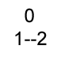
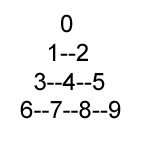
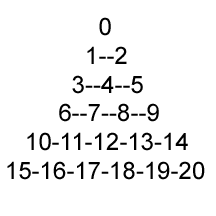

Describes a triangular high-order patch.
typedef struct _D3DTRIPATCH_INFO {
UINT StartVertexOffset;
UINT NumVertices;
D3DBASISTYPE Basis;
D3DORDERTYPE Order;
} D3DTRIPATCH_INFO;
The table below shows the order of the vertices for each of the tri-patches supported on Xbox:
| Linear Bezier |  |
| Cubic Bezier |  |
| Quintic Bezier |  |
Xbox does not support either D3BASIS_BSPLINE or D3DBASIS_INTERPOLATE as a basis type for triangular patches.
Header: Declared in D3d8types.h.